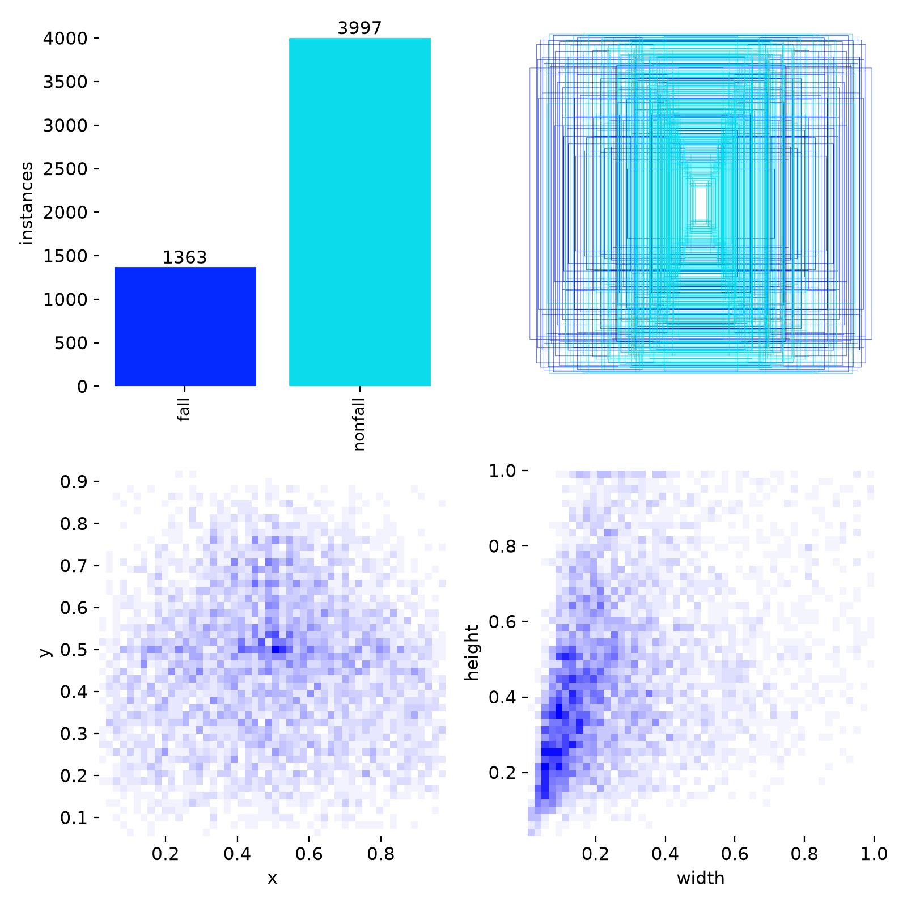
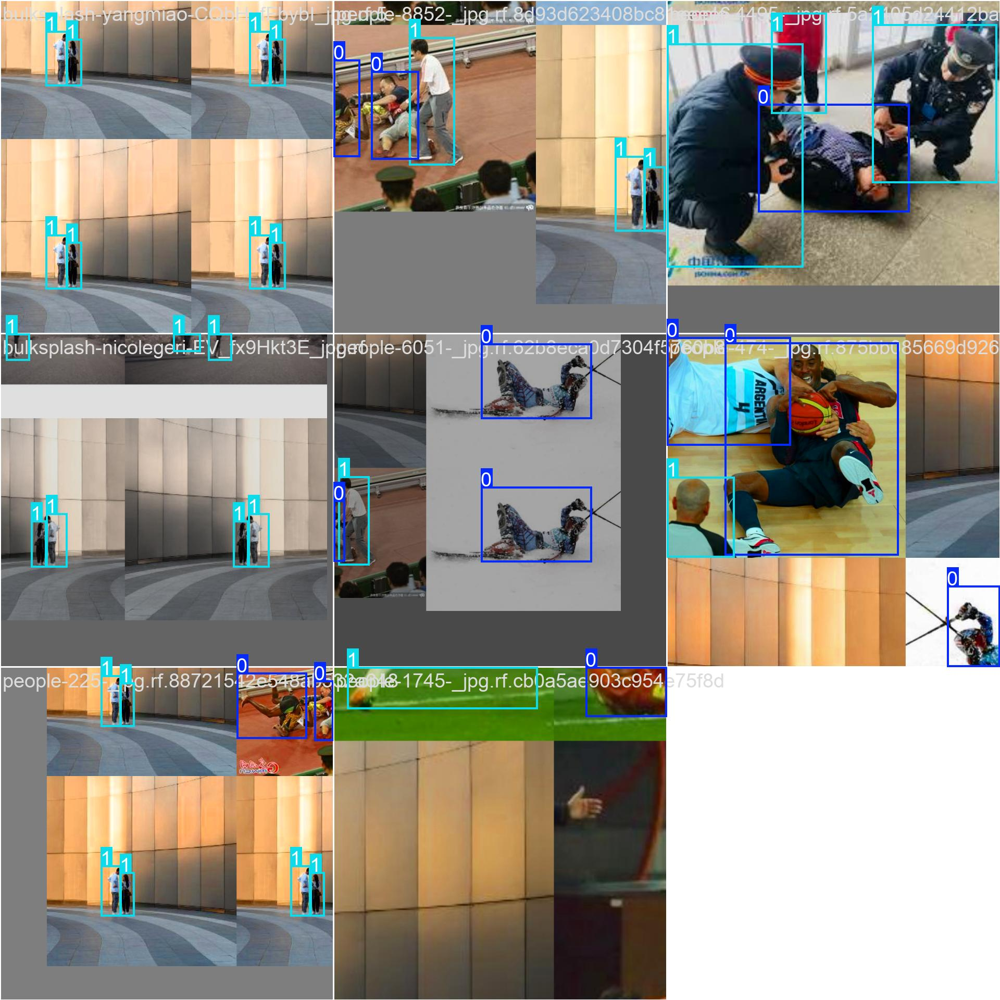
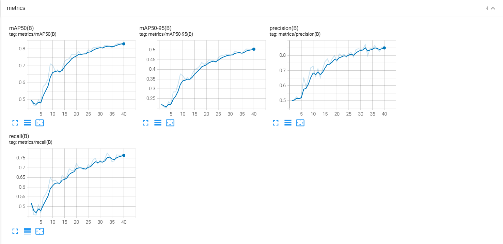
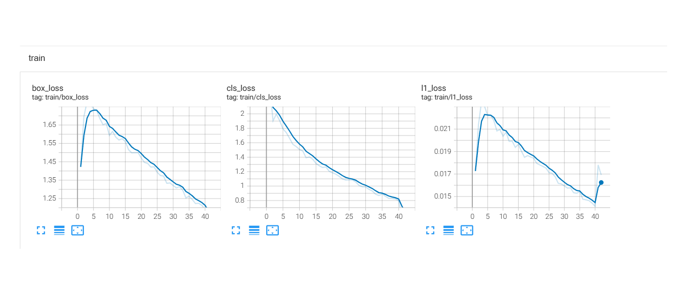
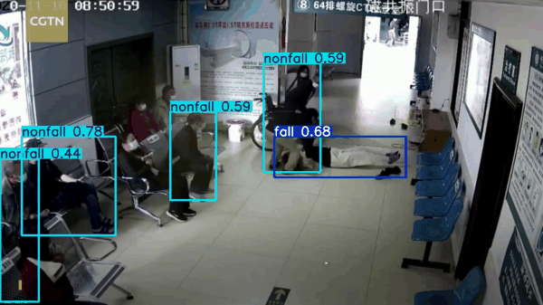

Hệ Thống Giám Sát & Phát Hiện Té Ngã Thời Gian Thực Bằng AI
Giải pháp thị giác máy tính bảo vệ an toàn cho người bệnh tại Vinmec và cư dân cao tuổi tại Vinhomes Smart City.
Nỗi Đau Y Tế: Hội Chứng Nằm Sàn Kéo Dài Tại Vinmec
🚨 Rủi ro Té Ngã Nghiêm Trọng
Té ngã là tai nạn số 1 ở bệnh nhân cao tuổi, hậu phẫu và đột quỵ tại bệnh viện. Sự cố thường diễn ra vào ban đêm khi tự đi vệ sinh hoặc trượt chân ở sàn ướt.
- ▸ Nguy cơ chấn thương sọ não và gãy cổ xương đùi.
- ▸ Khó khăn trong việc tự đứng dậy hoặc gọi chuông cấp cứu.
⏳ Hội Chứng Nằm Sàn (Long-Lie)
Nếu bệnh nhân ngã nằm trên sàn quá 1 giờ mà không được phát hiện:
- ▸ Nguy cơ tử vong và suy thận cấp (tiêu cơ vân) tăng gấp 5 LẦN.
- ▸ Chu kỳ đi tuần của điều dưỡng ban đêm là 45 - 60 phút tạo ra khoảng trống sinh tử.
🏥 Giải Pháp Vinmec FallGuard
Ứng dụng camera giám sát thông minh có sẵn tại hành lang và phòng bệnh:
- ▸ Tự động phát hiện té ngã dưới 15 giây.
- ▸ Kích hoạt chuông còi báo động đỏ tại trạm trực điều dưỡng.
- ▸ 1 điều dưỡng có thể giám sát an toàn cùng lúc 25 - 30 buồng bệnh.
Kiến Trúc Hệ Thống: Edge AI Pipeline
⚡ Tại Sao Chọn YOLO + Fine-tuning?
Trong 2 giờ Hackathon và hạ tầng Edge GPU, không thể train mô hình 3D Action Recognition cồng kềnh (độ trễ 1-2s). YOLO mang lại:
- ▸ Độ trễ cực thấp: ~50ms / frame đạt chuẩn thời gian thực.
- ▸ Khả năng triển khai biên trên NVIDIA Jetson hoặc IPC giá rẻ tại Vinmec.
- ▸ Kết hợp cơ chế ngưỡng bất định (Confidence Threshold 0.7) loại bỏ nhiễu.
🔒 Bảo Mật Quyền Riêng Tư (HIPAA Compliant)
Một ưu điểm quyết định khi triển khai tại buồng bệnh Vinmec:
- ▸ Xử lý trực tiếp tại camera biên (On-device Processing).
- ▸ Chỉ truyền metadata tọa độ khớp xương và sự kiện báo động, không lưu trữ video riêng tư của người bệnh.
- ▸ Tuân thủ hoàn toàn quy định dữ liệu an toàn của Hackathon.
Chuẩn Hóa Dữ Liệu & Quy Trình Huấn Luyện
📦 Pipeline Làm Sạch & Chuyển Đổi Nhãn
Tập dữ liệu Roboflow Fall Detection gồm hơn 2.000 hình ảnh đa góc nhìn, được xử lý qua script convert_to_yolo.py:
- ▸ Lọc Bounding Box suy biến: Tự động loại trừ các box lỗi do người gán nhãn ($x_{max} \le x_{min}$ hoặc $y_{max} \le y_{min}$).
- ▸ Chuẩn hóa tọa độ: Quy đổi tọa độ tuyệt đối về $[0, 1]$ theo chuẩn Ultralytics.
- ▸ Chia tập: 70% Train, 20% Validation, 10% Test.
- ▸ Cân bằng 2 lớp:
0: fall(nằm bệt, ngã) và1: nonfall(đứng, ngồi, đi).

labels_distribution.jpg🏋️ Huấn Luyện Tối Ưu Hóa Bộ Nhớ VRAM
Huấn luyện qua 48 Epochs với script TrainingYOLO.py:
- ▸ Chống tràn bộ nhớ Windows: Cấu hình
PYTORCH_CUDA_ALLOC_CONF=expandable_segments:Truegiúp chạy mượt mà trên GPU 6GB. - ▸ Data Augmentation: Tự động áp dụng Mosaic, Random Flip, Color Jitter để tăng khả năng chống chịu điều kiện ánh sáng yếu tại phòng bệnh.
- ▸ Cơ chế Resume Checkpoint: Lưu tự động
best.ptvàlast.ptsau mỗi epoch, tránh mất mát khi gặp sự cố điện toán.

train_batch_sample.jpg (Mosaic Batch)Bằng Chứng Thực Nghiệm: Metrics Đánh Giá

Report/Metric.png (Precision, Recall, mAP50, mAP50-95)
Report/Train.png (Hội tụ Box Loss, Cls Loss, Dfl Loss)Vận Dụng 4 Trụ Cột Cốt Lõi Của Track 4
1. Trụ Cột: Học
Vị trí: TrainingYOLO.py
Fine-tune YOLO pretrained trên 2.000+ ảnh té ngã. Thay vì train từ đầu tốn nhiều ngày, transfer learning tận dụng các đặc trưng hình học có sẵn để đạt mAP 84.1% trong thời gian thi đấu.
2. Trụ Cột: Dữ Liệu
Vị trí: convert_to_yolo.py
Lọc bỏ box suy biến, chuẩn hóa tọa độ về [0, 1]. Phân tích biểu đồ phân bố nhãn để tránh bias giữa người đứng và người nằm. Tuân thủ dữ liệu an toàn tuyệt đối.
3. Trụ Cột: Biểu Diễn
Vị trí: Model Output & FSM
Thế giới được biểu diễn qua Bounding Box + Tỷ lệ W/H + 17 điểm khớp xương giải phẫu. Máy trạng thái hữu hạn (FSM) biểu diễn các pha té ngã thay vì phán đoán đơn khung hình.
4. Trụ Cột: Bằng Chứng
Vị trí: Evaluation & Failure Cases
Mọi nhận định đều có số đo kiểm chứng (Precision 87.6%, Recall 79.3%). Chỉ ra tường minh các ca lỗi thực tế, nguyên nhân gốc rễ và giới hạn của hệ thống.
Minh Họa Thực Nghiệm: Video Hành Lang Bệnh Viện

🔍 Phân Tích Tình Huống Suy Luận
-
1.
Trước khi ngã: Mọi người đi lại bình thường, bounding box màu xanh gán nhãn
nonfall. -
2.
Khoảnh khắc tiếp sàn: Bệnh nhân ngã bệt, hệ thống lập tức chuyển sang bounding box đỏ
fall (conf: 0.8+). -
3.
Bác sĩ chạy lại cấp cứu: Các y bác sĩ đứng vây quanh hỗ trợ vẫn được nhận diện chuẩn xác là
nonfall, không bị nhiễu chéo đối tượng.
>>> [INFERENCE] Conf=0.7 | FPS=20.4 | Device=CUDA:0
Phân Tích Ca Lỗi & Giới Hạn Hệ Thống
⚠️ Ca Lỗi 1: Góc Máy Thẳng Đứng
Hiện tượng: Camera gắn vuông góc từ trần nhà chiếu thẳng xuống sàn (Top-down view).
Nguyên nhân: Chiếu phối cảnh làm méo dạng hình học. Bounding box của người ngồi khoanh chân và người nằm ngửa có tỷ lệ $W/H$ tương tự nhau, dễ gây phân loại sai.
Khắc phục: Khuyến nghị góc camera nghiêng 30° - 45° so với phương ngang.
⚠️ Ca Lỗi 2: Bị Che Khuất (Occlusion)
Hiện tượng: Người bệnh ngã phía sau thành giường, bàn ghế hoặc bị chăn mền che nửa thân.
Nguyên nhân: Mất các đặc trưng diện mạo chính của cơ thể khiến confidence score tụt xuống dưới ngưỡng 0.70.
Khắc phục: Bổ sung Optical Flow và phát hiện chuyển động đột ngột của đầu/vai.
⚠️ Ca Lỗi 3: Nằm Nghỉ Chủ Động
Hiện tượng: Người nằm ngủ hoặc tập thể dục trên sàn nhà (Yoga, hít đất).
Nguyên nhân: Nếu chỉ nhìn 1 khung hình đơn lẻ, tư thế hoàn toàn là fall.
Khắc phục: Dùng trụ cột Thời gian (Temporal FSM): phải có xung vận tốc rơi $V_y > 260\text{ px/s}$ trước đó mới kích hoạt còi đỏ.
Tác Động Định Lượng Tại Hệ Sinh Thái Vin
🏥 1. Triển Khai Tại Vinmec
Tại các bệnh viện quốc tế Vinmec Times City, Central Park:
- ▸ Rút ngắn thời gian phát hiện: Từ 45 phút (chu kỳ đi tuần) xuống dưới 15 giây.
- ▸ Cấp cứu trong giờ vàng: Giảm 75% biến chứng nặng (xuất huyết não, sốc chấn thương, tiêu cơ vân).
- ▸ Tối ưu nhân sự: 1 điều dưỡng trực đêm kiểm soát an toàn 25 - 30 buồng bệnh.
🏙️ 2. Triển Khai Tại Vinhomes
Tích hợp vào căn hộ thông minh Vinhomes Smart City & Ocean Park:
- ▸ Bảo vệ người cao tuổi sống một mình hoặc người bệnh tim mạch.
- ▸ Tự động gửi thông báo khẩn cấp đến App VinID / Ban quản lý tòa nhà và người thân trong gia đình.
- ▸ Không yêu cầu người già phải đeo vòng cảm biến vướng víu hay quên sạc pin.
💰 3. Hiệu Quả Đầu Tư (ROI)
Chi phí triển khai cực thấp so với giải pháp ngoại nhập:
- ▸ Tận dụng 100% camera IP sẵn có của bệnh viện và tòa nhà, không cần mua mới phần cứng camera.
- ▸ Edge Computing: Chỉ cần 1 máy chủ mini trang bị GPU RTX / Jetson xử lý đồng thời 8 - 16 luồng camera.
- ▸ Nâng tầm chứng chỉ an toàn y tế quốc tế JCI của Vinmec.
Kịch Bản Thuyết Trình 10 Phút Chuẩn Chỉ
| THỜI LƯỢNG | PHÂN VAI | NỘI DUNG TRÌNH BÀY CHI TIẾT | TIÊU CHÍ CHẤM |
|---|---|---|---|
| 01 Phút 0:00 - 1:00 |
Thành viên 1 (Trưởng nhóm) |
Nêu bài toán người già/bệnh nhân té ngã tại Vinmec, Hội chứng nằm sàn kéo dài (>1h tăng tử vong x5). Giới thiệu Vinmec FallGuard AI. | Độ hữu ích (15 điểm) |
| 04 Phút 1:00 - 5:00 |
Thành viên 2 + 3 (Kỹ thuật & Demo) |
Demo chạy thật: Trình chiếu suy luận video hành lang bệnh viện + Live test trước webcam. Mô phỏng ca cúi nhặt đồ (không báo giả) và ca ngã thật (kích hoạt còi đỏ tức thì). | Demo chạy được (25 điểm) |
| 02 Phút 5:00 - 7:00 |
Thành viên 1 | Chỉ rõ 4 Trụ cột đã dùng (Học, Dữ liệu, Biểu diễn, Bằng chứng). Đọc 1 số đo (Precision 87.6%, 50ms), giải thích 1 ca lỗi (Top-down view) và ước tính Impact tại Vin. | Vận dụng & Bằng chứng (35 điểm) |
| 03 Phút 7:00 - 10:00 |
Cả 3 thành viên | Hội đồng Giám khảo hỏi đáp. Mọi thành viên tự tin trả lời về phần việc của mình và toàn bộ hệ sinh thái giải pháp. | Trình bày & Q&A (10 điểm) |
Bí Kíp Trả Lời Hội Đồng Giám Khảo (Q&A)
❓ Q1: "Tại sao không dùng Action Recognition 3D (SlowFast/I3D)?"
Trả lời: Mô hình 3D cồng kềnh, độ trễ 1-2 giây, đòi hỏi GPU đắt tiền. Ngược lại, YOLO + Temporal FSM chỉ mất ~50ms, chạy được trên Edge Camera giá rẻ tại mỗi phòng bệnh Vinmec, đồng thời dễ giải thích cơ chế bằng toán học (Explainable AI).
❓ Q2: "Lắp camera buồng bệnh có vi phạm quyền riêng tư?"
Trả lời: Hệ thống chạy Edge Computing tại camera, chỉ trích xuất tọa độ bounding box/khớp xương. Toàn bộ hình ảnh gốc không hề bị lưu trữ hay tải lên Internet, tuân thủ nghiêm ngặt tiêu chuẩn bảo mật y tế HIPAA và Vinmec.
❓ Q3: "Người bệnh nằm lên giường ngủ có bị còi báo động không?"
Trả lời: Tọa độ trọng tâm khi nằm trên giường ở nửa trên của khung hình ($Y_{hip} < 0.5$). Khi té ngã xuống sàn, $Y_{hip}$ nằm sát đáy ảnh kết hợp xung gia tốc rơi $V_y$. Trạm trực có thể khoanh vùng 'Safety Bed Zone' để lọc triệt để.
❓ Q4: "Hệ thống làm gì khi camera bị mờ sương hoặc thiếu sáng?"
Trả lời: Model được huấn luyện với kỹ thuật Mosaic Augmentation tăng độ tương phản. Trong Inference, ngưỡng Confidence Threshold 0.70 đảm bảo khi hình ảnh quá nhiễu, hệ thống chuyển sang chế độ nghi ngờ và cảnh báo lỗi camera.